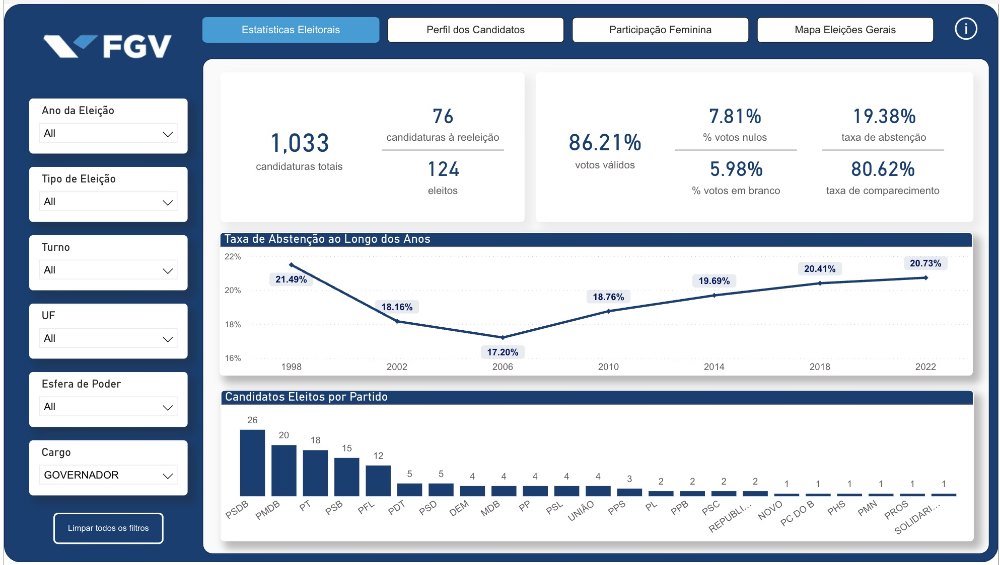
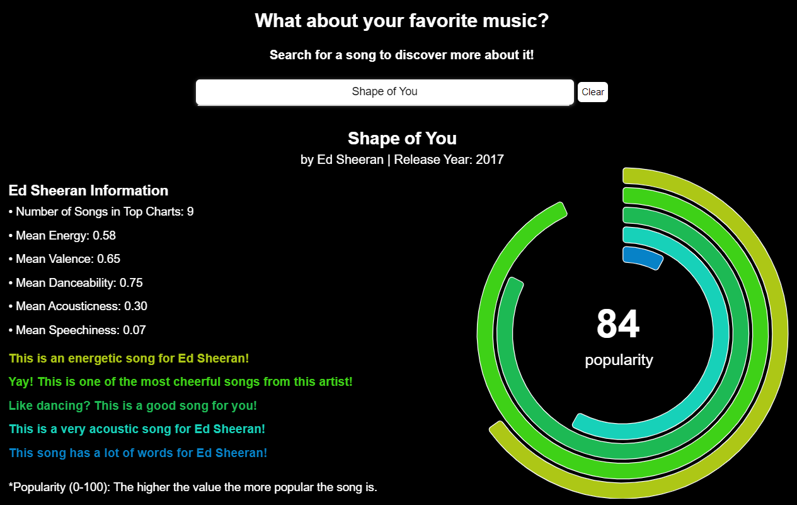

Built an interactive dashboard analyzing Brazilian electoral data. Conducted data cleaning, transformation, and wrangling to create clear visualizations on candidate profiles, female participation, and vote distribution, supporting transparency and public analysis.
Partnered with the Brazilian Sailing Confederation (CBVela) to develop an athlete ranking system, consolidating 130k+ competition records. Built data collection and standardization pipelines and tested ranking models (Elo Rating, Keener's Method), delivering strategic insights for Olympic preparation.
Rebuilt comprehensive dashboard consolidating 12+ data sources into a centralized, automated BI solution with hourly updates and Slack integration. Enabled supervisors to track key KPIs in near real-time across all customer service channels.

An interactive scrollytelling web application exploring Spotify's most popular tracks from 2000-2019. Users discover music evolution trends through visualizations and multiple chart types and can search their favorite songs to see how they rank across audio features like energy, danceability, and tempo.